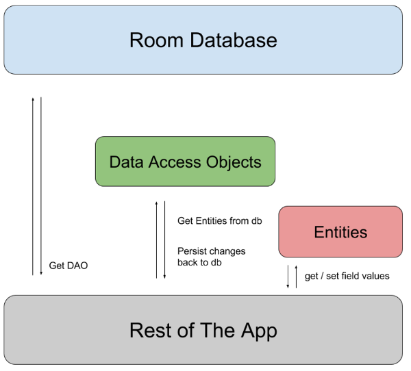

Room es un ORM (Object- Relational mapping) que nos permitirá trabajar de una forma más sencilla con bases de datos SQL.

La imagen anterior nos muestra el funcionamiento de dicha herramienta que, aunque parezca complicado al principio, es muy fácil de entender cuando nos pongamos a ello.
Tendremos una base de datos que le devolverá a nuestra app los Data Access Objects (DAO) estos son los encargados de persistir la información en la base de datos y de devolvernos las entities, que serán las encargadas de devolvernos la información que hemos ido almacenando.
Necesitas incluir el plugin kotlin-kapt y las dos siguientes dependencias:
id 'kotlin-kapt'
implementation 'androidx.recyclerview:recyclerview:1.2.1'
implementation 'androidx.room:room-ktx:2.4.3'
kapt 'androidx.room:room-compiler:2.4.3'Entidades
En Room, cada entidad (Entity) representa una tabla debe ser una clase. En nuestro caso, vamos a definir una tabla que nos permita almacenar los datos de un disco de música. En concreto, vamos a crear una clase llamada TaskEntity Y la anotaremos con @Entity.
Las anotaciones convierten clases normales en elementos interpretables por Room. Habrá que utilizarlas continuamente para configurar la base de datos y conseguir una estructura y propiedades a nuestro gusto.
@Entity(tableName = "task_entity")
data class TaskEntity (
@PrimaryKey(autoGenerate = true)
var id:Int = 0,
var name:String = "",
var isDone:Boolean = false
)La anotación @Entity la utilizamos para añadirle un nombre a nuestra entidad como tabla de la base de datos. Cada base de datos puede contener una o varias tablas y cada una persiste un modelo diferente.
La anotación @PrimaryKey (autoGenerate = true) está diciendo que la variable id es un valor que se autogenera al crear un objeto de esta clase y que no podrá repetirse. Es un valor único con el cual podremos localizar un objeto concreto.
DAOs
También necesitaremos una interface DAO (Data Access Object), que será la que nos permita acceder a la tabla, hay que crear una por cada entidad. En nuestro caso, esta clase será TaskDao.kt y la anotaremos con @Dao.
Los objetos DAO facilitan mucho el acceso a la BD. Aquí se declararán los métodos que interactuarán con las tablas:
- @Query: Se hacen consultas directamente a la base de datos usando SQL. En este ejemplo haremos dos muy sencillas, pero se pueden hacer cosas impresionantes.
- @Insert: Se usará para insertar entidades a la base de datos, a diferencia de las @Query no hay que hacer ningún tipo de consulta, sino pasar el objeto a insertar.
- @Update: Actualizan una entidad ya insertada. Solo tendremos que pasar ese objeto modificado y ya se encarga de actualizarlo. ¿Cómo sabe que objeto hay que modificar? Pues por nuestro id, la PrimaryKey.
- @Delete: Como su propio nombre indica borra de la tabla un objeto que le pasemos.
@Dao
interface TaskDao {
@Query("SELECT * FROM task_entity")
fun getAllTasks(): MutableList
@Insert
...
@Update
...
@Delete
...
}Android Studio permite autocompletar y hacer validaciones sencillas de las queries que definamos.
A las consultas también podemos pasarles argumentos. Sólo hay que indicar el argumento en la función:
@Query("SELECT * FROM task_entity WHERE id = :id")
fun findById(id: Int): TaskEntityGracias a onConflict, podemos definir la estrategia de inserción si hubiera conflictos: IGNORE, ABORT o REPLACE:
@Insert(onConflict = OnConflictStrategy.IGNORE)
fun insert(tasks: List<TaskEntity>)Base de datos
Por último, definiremos una clase que nos permitirá la creación de la base de datos como tal. Para ello crearemos el archivo TaskDatabase.kt y usaremos la anotación @Database .
Lo recomendado es que esta clase siga un patrón singleton. Aquí es donde se indicarán las entidades que formaran la base de datos, la forma de crearla/destruirla, la versión, etc.
@Database(entities = arrayOf(TaskEntity::class), version = 1)
abstract class TasksDatabase : RoomDatabase() {
abstract fun taskDao(): TaskDao
}Lo primero que debemos fijarnos es en la anotación @Database, que especifica que la entidad será una lista de TaskEntity (entidad que ya hemos creado) y que la versión es 1.
La clase extendida RoomDatabase(), es una clase que tenemos gracias a importar la dependencia de Room en nuestro gradle. Para finalizar tiene una sola función que hace referencia al Dao que hemos creado anteriormente, si tuviésemos más Dao’s pues habría que implementarlos ahí también.
Para crear la instancia de Room, en el Application por ejemplo:
val room: TasksDatabase = Room
.databaseBuilder(this, TasksDatabase::class.java, "tasks")
.build()Y para usarlo:
val tasks = room.TaskDao().getAll()MisNotasApp
Ahora vamos a crear una clase algo diferente. Esta clase va a extender de Application() y eso significa que será lo primero en ejecutarse al abrirse la aplicación.
class MisNotasApp: Application() {
companion object {
lateinit var database: TasksDatabase
}
override fun onCreate() {
super.onCreate()
MisNotasApp.database = Room.databaseBuilder(this, TasksDatabase::class.java, "tasks-db").build()
}
}Aquí, la instancia de database necesitará tres parámetros, el contexto (this), la clase de nuestra base de datos (TasksDatabase) y el nombre que le pondremos, en este caso, "tasks-db".
Para que esta clase se lance al abrir la app debemos ir al AndroidManifest.xml y añadir android:name=".MisNotasApp" dentro de la etiqueta
activity_main
Aunque tengamos varias clases por detrás, nuestra app solo tendrá un layout, una sola vista. La idea es crear algo sencillo y usable, por lo que me contaremos con una barra superior donde añadir las tareas y luego un RecyclerView donde se muestren todas.
<?xml version="1.0" encoding="utf-8"?>
<RelativeLayout xmlns:android="http://schemas.android.com/apk/res/android"
xmlns:tools="http://schemas.android.com/tools"
android:layout_width="match_parent"
android:layout_height="match_parent"
android:background="@android:color/background_light"
tools:context="com.cursokotlin.misnotas.UI.MainActivity">
<android.support.v7.widget.RecyclerView
android:id="@+id/rvTask"
android:layout_width="match_parent"
android:layout_height="match_parent"
android:layout_below="@+id/rlAddTask"/>
<RelativeLayout
android:id="@+id/rlAddTask"
android:layout_width="match_parent"
android:layout_height="wrap_content"
android:elevation="10dp"
android:layout_margin="10dp"
android:background="@android:color/white">
<EditText
android:id="@+id/etTask"
android:layout_width="wrap_content"
android:layout_height="wrap_content"
android:hint="añade una tarea"
android:layout_alignParentLeft="true"
android:layout_toLeftOf="@+id/btnAddTask"
/>
<Button
android:id="@+id/btnAddTask"
android:layout_width="wrap_content"
android:layout_height="wrap_content"
android:layout_alignParentRight="true"
android:text="Añadir"/>
</RelativeLayout>
</RelativeLayout>MainActivity
Con la vista preparada, es el momento de empezar a generar la lógica. Empezamos creando las variables necesarias.
lateinit var recyclerView: RecyclerView
lateinit var tasks: MutableList<TaskEntity>Ahora nos vamos al OnCreate de nuestra actividad, lo primero que haremos será instanciar tasks como una arrayList y acto seguido llamaremos a la función getTasks() que vamos a crear. Esta función será la encargada de acceder a nuestro DAO para hacer la primera consulta, recuperar todas las entidades que el usuario tenga guardadas. Así que por ahora dejamos el OnCreate así.
override fun onCreate(savedInstanceState: Bundle?) {
super.onCreate(savedInstanceState)
setContentView(R.layout.activity_main)
tasks = ArrayList()
getTasks()
}Con lo realizado hasta ahora, ya tendríamos suficiente para crear y manejar la base de datos. De entre las posibles complicaciones que nos podemos encontrar en este primer contacto con Room, solo hay que tener una cosa importante en cuenta: las operaciones de acceso a la base de datos no pueden realizarse en el hilo principal de la app. Si hacemos esto, la app se cerrará abruptamente.
Tendremos que detenernos para conocer un poco el uso de los hilos. Los hilos son los que permiten la multitarea de un dispositivo, por ejemplo en un hilo puedes ir guardando información asíncronamente (por detrás) mientras el usuario sigue haciendo cosas.
En Android, el hilo principal es el encargado de la parte visual de la aplicación, por lo que no nos deja acceder a la base de datos desde ahí, por ello crearemos un hilo secundario que de modo asíncrono hará la petición a la base de datos y recuperará la información que necesitemos.
Las versiones se usan para la posible migración de datos al actualizar la App. Imaginemos que sacamos una segunda versión de la app y en vez de 3 parámetros almacenamos 4, no podemos cambiar nuestra entidad de golpe pues habría problemas. Para eso se usa la versión, junto a un fichero de migración que le dice al programa que deberá hacer para pasar de la versión 1 a la 2, 3 o la que sea.